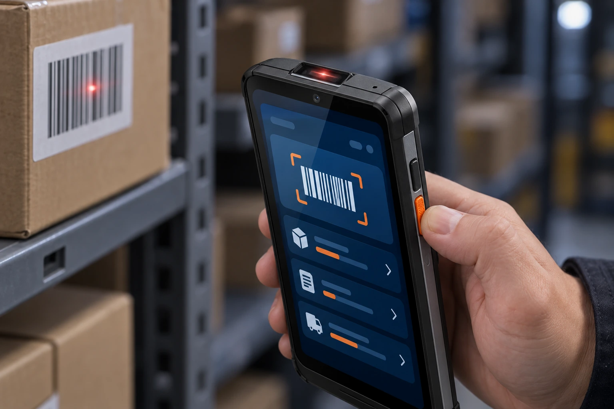
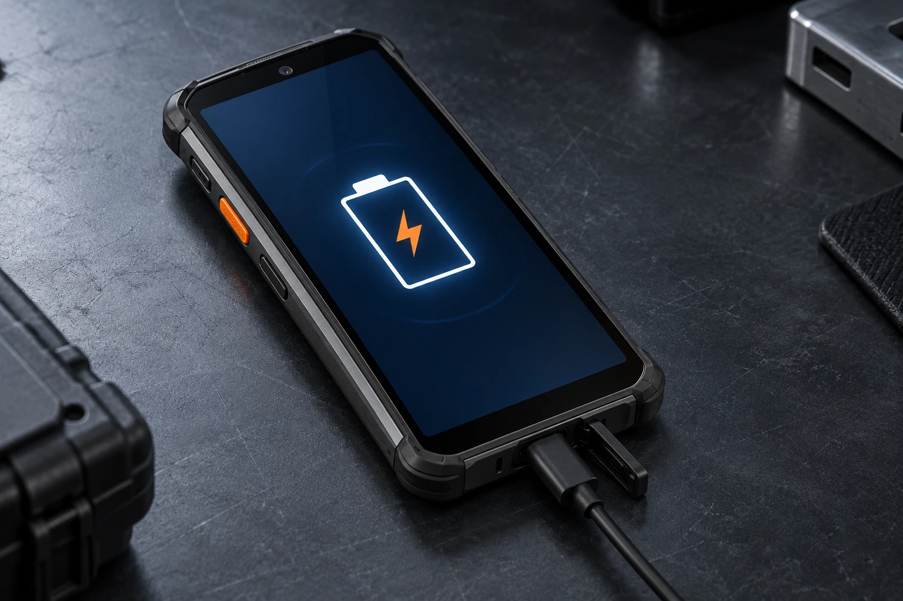
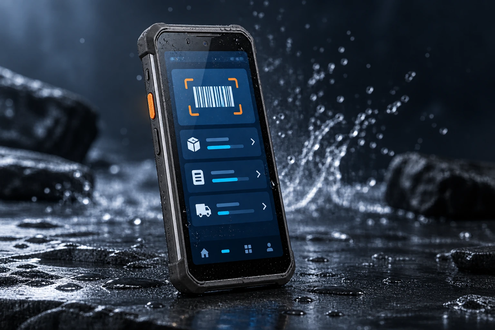

均衡八核性能
业务应用切换，操作顺畅衔接。
把性能、识读、连接与防护，落到现场作业的每一步。
业务应用切换，操作顺畅衔接。
连续扫描，提高日常采集效率。
按班次换电，支持快充补电。
清晰呈现任务、图像与业务信息。
面向应用部署与业务系统适配。
防尘防水，应对工业现场挑战。
Qualcomm SM6115 八核平台搭配 6GB + 128GB 建议配置，兼顾业务运行、数据同步与多应用切换。采用 Android 15，方便对接仓储、零售和制造应用。
高性能二维扫描方案，覆盖一维码、二维码与屏幕条码，面向常见污损码和密集条码作业。小面积铜橙侧面扫码键，配合细纹握持区域，让收货、拣选与复核更顺手。

5000mAh 可拆卸电池建议方案，满足移动作业的续航需求。支持快充补电，便于在休息间隙恢复电量；结合班次换电与备用电池安排，让高频任务有序接续。

6.0 英寸 FHD+ 多点触控屏，清晰呈现任务清单、商品信息与扫描结果。全触屏交互配合加固机身，在移动中查询、录入与核验，减少往返固定工位。
IP67 防护与 1.5 米跌落建议方案，面向粉尘、泼溅和频繁搬运环境。低轮廓护角、细纹侧握与便于定位的扫码键，让日常握持和现场操作更踏实。

结合移动网络、现场 Wi-Fi 与企业应用，让终端和业务协同运转。
通过移动网络与现场无线网络，同步订单、库存和业务状态。
便于连接外设与开展近场交互，拓展现场工作流程。
围绕应用安装、版本更新与项目适配，开展终端部署和日常维护。
面向需要连续扫码、多任务切换与可靠连接的一线岗位。
收货、上架、拣选与库存盘点，完成高频货品采集。
门店收货、价签核验与商品盘点，衔接日常门店任务。
物料追踪、生产报工与工序核验，连接现场业务数据。
按业务需求选择配置，详细方案欢迎与我们沟通。
以上为建议配置，具体参数可能因项目需求及产品版本调整，请以最终规格书为准。
与我们沟通 QC406 的扫码引擎、Android 15 适配和现场配件需求。